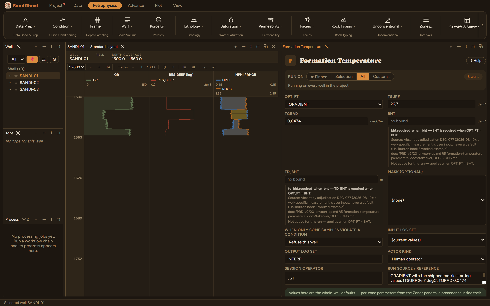

Formation temperature from a linear trend. GRADIENT mode takes a surface temperature plus a constant gradient with depth; BHT mode interpolates linearly from the surface temperature to a bottom-hole temperature at its measured depth.
GRADIENT: FTEMP = TSURF + TGRAD·depth BHT: FTEMP = TSURF + (BHT − TSURF)·depth/TD_BHT
The simplest member of the prep shelf, and the one several others depend on: a linear temperature trend with depth. GRADIENT mode takes a surface temperature plus a constant gradient; BHT mode interpolates from the surface temperature to a measured bottom-hole temperature. Nearly every temperature-sensitive step downstream (the neutron environmental correction, gas correction through the precalc chain) reads the FTEMP curve this writes.
This run keeps the shipped metric starting values: TSURF 26.7 °C and TGRAD 0.0474 °C/m. They are starting values, not a calibration. Refit them from your own BHT or DST data per basin. On a metric well the gradient must be per metre; a feet-based gradient entered unconverted runs ~3.3× hot.

On these wells: 3 clean. FTEMP runs 97.6–101.1 °C across the 1495–1570 m logged interval, exactly the linear arithmetic, which is the point: the module states a trend, and whether that trend is right is a question for your own temperature data.
Everything below is generated from the same manifest the application builds this module’s pane from — descriptions, defaults, sources, ranges and pre-run checks here are exactly what the running application enforces.
GRADIENT: FTEMP = TSURF + TGRAD*depth. BHT: linear interpolation from surface temperature to bottom-hole temperature at TD_BHT.
Whole-well defaults; per-zone values from the Zones pane take precedence inside their zones (except where a parameter is marked one-value-per-well).
Surface temperature (whole well)
Temperature gradient (whole well)
Bottom hole temperature (whole well)
bht.required_when_bht — BHT is required when OPT_FT = BHT. Applies when: [object Object].
Depth of BHT measurement (whole well)
td_bht.required_when_bht — TD_BHT is required when OPT_FT = BHT. Applies when: [object Object].
Temperature model
GRADIENTBHTGRADIENT| Name | Description |
|---|---|
| FTEMP | Formation temperature |